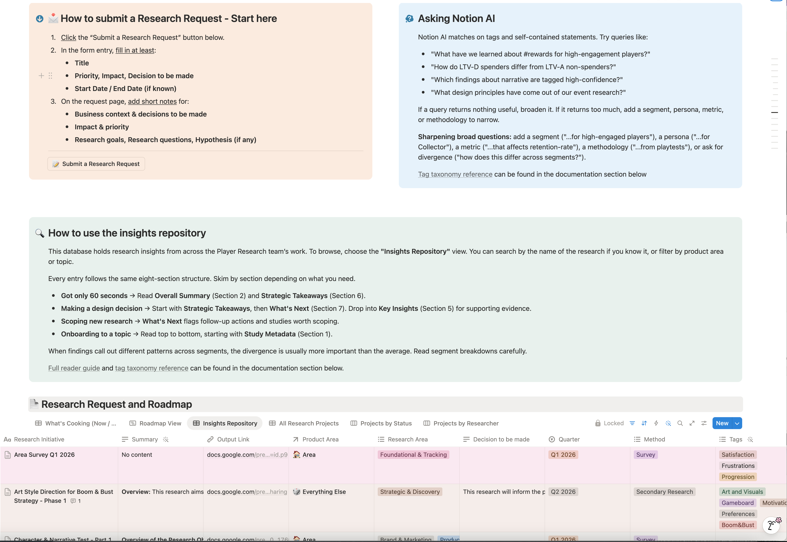

The challenge
Player research was ad-hoc. No consistent way to request it, no shared view of what was in flight, and no durable home for insights. As Merge Mansion scaled, that fragmentation got expensive.
Case 01 · Metacore Games
When I joined Metacore, player research was ad-hoc. I built the function from the ground up: intake tied to decisions, a live roadmap, and an insights repository you can query in plain language.
Player research was ad-hoc. No consistent way to request it, no shared view of what was in flight, and no durable home for insights. As Merge Mansion scaled, that fragmentation got expensive.
I built a single research hub covering the full lifecycle: decision-led intake, a live roadmap, a structured insights repository, AI-enabled retrieval, and shared templates and standards.
Research went from reactive and disposable to a system that scales. Five of the six product area teams now engage with research regularly.

The intake doesn't ask “can you run this survey.”
It asks what decision we are trying to make.
The full story
When I joined Metacore, player research was ad-hoc. Teams had no consistent way to ask for research, no shared view of what was in flight, and no durable home for insights. Findings lived in scattered decks, so they got rediscovered study by study or lost entirely.
As the studio scaled Merge Mansion, that fragmentation got expensive: duplicated work, decisions made without evidence that already existed, and research that couldn't build on itself.
I built the function from the ground up and now lead it, including managing a direct report. I defined how research gets requested, prioritised, delivered, stored, and reused. And I own that system and keep evolving it as we grow.
A single research hub covering the full lifecycle.
IntakeA structured request process that ties every study to a decision. Requesters specify the business context and the decision at stake, impact and priority, and objectives, hypotheses, and key questions. This keeps research anchored to decisions rather than deliverables, and it raises the quality of what we take on.
RoadmapA live database of all research initiatives across product areas (Area, LiveOps, Core, Meta, Monetisation), methods, and quarters. Stakeholders get a transparent view of what is in progress, what is planned, and who owns it.
Insights repositoryEvery study follows the same structure so findings are easy to navigate and reuse: what we found, why players feel that way, why it matters, key insights with supporting evidence, strategic takeaways, and next steps. Insights are tagged against a controlled taxonomy, so the body of knowledge compounds over time.
AI-enabled retrievalI layered an atomic research framework on top to make the repository queryable in natural language, for example “how do LTV-D spenders differ from LTV-A non-spenders?” or “which findings about narrative are high-confidence?” That turns a static archive into something teams can query themselves without needing a researcher in the loop.
Documentation, templates, and standardsReusable templates, methodology and incentivisation guidelines, and survey tooling integrations, so the team works from a shared, consistent toolkit.
Research at Metacore went from reactive and disposable to a system that scales. The intake process did more than organise requests, it shifted how teams approach research. By asking stakeholders to name the decision at stake before a study begins, it moved conversations away from “can you run this survey” toward “here is the decision we are trying to make.”
Request volume grew substantially as teams started bringing decisions to research earlier, and five of the six product area teams now engage with research regularly. To deepen that shift, I documented how to read insights and query the repository through Notion AI, so teams can self-serve answers and treat the repository as a first stop rather than an archive nobody opens.
Decisions increasingly draw on accumulated evidence instead of one-off studies, and insights compound rather than fade.